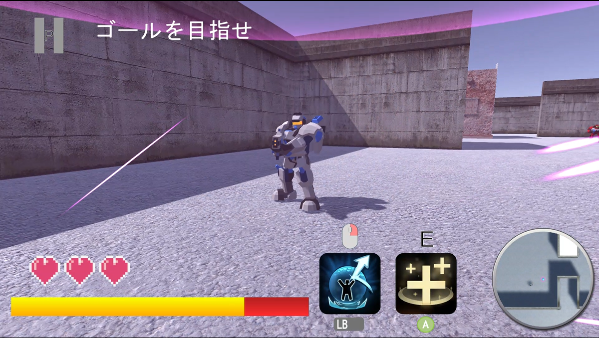
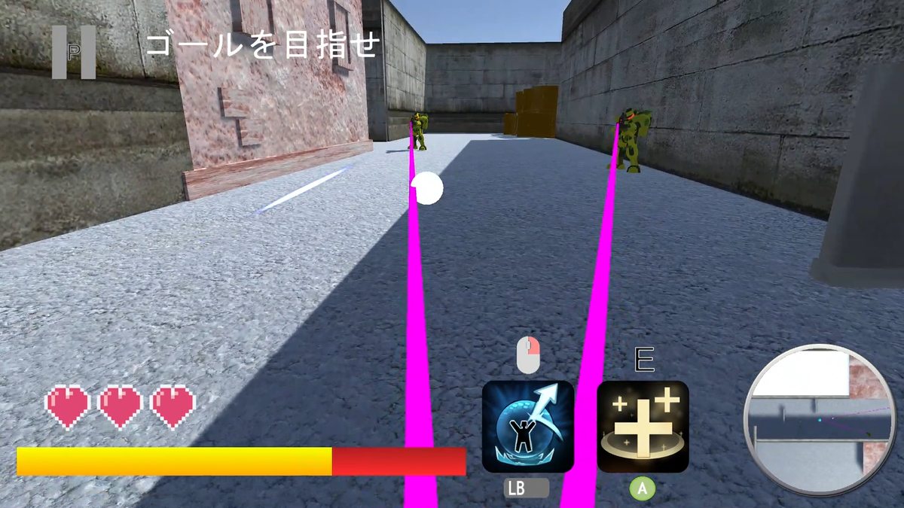

FPSなのに撃てない！？『Alive in the Battlefield』

基本情報
- 制作時期
- 大学2年7～2月
- 役割
- 5人チーム（担当: 企画、進捗管理、UIデザイン）
- 使用ツール
- Unity, C#, Git
- テーマ
- 「動詞」からゲームを考える
制作のきっかけ
大学の実習で「動詞からゲームを考える」という課題が出されました。
そこで私は、日本語の自動詞を網羅したリストを作成し、そこからランダムに抽出するアプローチを取りました。
結果として選ばれた「弾く」という動詞から着想を広げ、最終的に「自発的な狙撃ができず、敵弾の跳ね返しで状況を切り抜けるFPS」という企画を立案しました。
こだわった点・工夫した点
- 優秀なプログラマーを上手く活かす
- 「無駄なタスク」を作らないスケジュール管理
- UIデザインも担当
チームには非常に優秀なプログラマーがおり、かっこいいエフェクトをわずか30分で実装したり、時間の限られた中で既存アセットを再配置して別ステージを2つ追加してしまうなど、驚異的なパフォーマンスを発揮してくれました。
プランナーとしてこの技術には頼りたいと感じつつも、過去に技術のあるプログラマーにタスクが傾倒して仕事量に膨大な差を生んだ経験があったので、彼に割り振るタスクの調整に苦労しました。
プロジェクトの進捗は非常に順調でしたが、手が空いたメンバーに対して「優先度の低いタスク」を無理に割り振ることはしませんでした。
進め方についてはチーム内で協議を行い、実習時間内でも適度な休息を取れるようスケジュールを調整しました。完成度100%とはいきませんでしたが、満足度の高い実習であったと感じています。
本プロジェクトではプランナー業務に加え、ゲーム内のUIデザインを一手に引き受けました。
Adobe Illustratorを用いてデザインを作成する過程はスムーズでしたが、それをUnity上に持ち込み、キーボードやゲームパッドで違和感なくカーソル移動できるように実装する部分で非常に苦戦しました。
UIデザインには経験と慣れがあったつもりだったので、作業時間の想定を大幅に超えてしまってチームメンバーには申し訳なかったです。


振り返り・学び
進行自体は完璧でしたが、チームの心理的距離を縮めることには苦戦しました。
夜遅くまでの開発作業の際、労いとコミュニケーションのきっかけになればと「5個入りのパン」を差し入れしたものの、結果としてそれだけで仲が深まることはありませんでした。
チームの距離を縮めること、良好なコミュニケーションをとることの難しさを実感する機会でした。